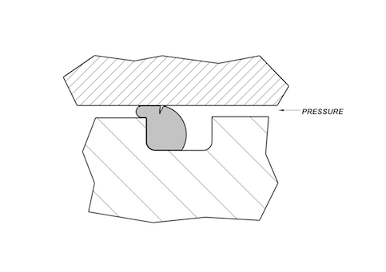

Some more good news and bad news. First of all, the good news. I’ve finished machining all of my parts, save for the base plate I will connect everything to. Most of my parts are somewhat assembled, and ready for integration. The flywheel is done, and my piston assemblies are partially assembled and ready to be put together at a few minute’s notice.
Unfortunately, I still have a critical flaw. It’s a similar issue as in entry 11 — my piston heads won’t move through my piston cylinders. At this point, I’ve put a lot more time into fixing this, but still to no avail. I’ve gone through about 5-8 different revisions of piston heads (depending on how you count them), and I’ve switched from the old blue piston seals to new, flexible o-rings. The newer piston head iterations are better than the old ones, but they still suffer from some problems. Now, my piston heads do fit within the cylinders, however the o-ring tries to slide out of the piston head as it moves, and eventually it makes its way out. This breaks the seal. In the meantime, as the o-ring pushes its way out of the piston head groove, it adds a bunch of additional friction, making the piston virtually inoperable. This is apparently a phenomenon known as o-ring extrusion, which can be a serious problem for any piston. I don’t think I can achieve the manufacturing precision required to prevent this from happening, especially with such a thin o-ring.

I think a thicker o-ring might resist this sort of extrusion a bit better, but I still can’t guarantee that it’ll work well. I have no idea how long these piston seal problems could keep up, and I can totally see myself buying more and more o-rings as I attempt to fix the problems I find — honestly, this seems like a waste, so I want to avoid it if I can.
I’m going to try a new approach instead. I found a video online of someone making highly effective DIY piston seals by molding hot glue (!!!), which seems pretty interesting, to say the least.
I’m seriously considering this approach, even though it seems a bit sketchy — I’d make a solid hot glue core for my piston seal, and attach machined Lexan plates to it so that I can precisely connect it to my other hardware. There are a few advantages to a hot glue seal that I can think of — first of all, the seal is molded to fit the tube, which makes for a closer fit. Hot glue also appears to form a somewhat flexible plastic when it is used like this, which will help the seal conform to any irregularities. If the seal is too tight, it can always be filed down, unlike my previous seals. Furthermore, since a hot glue seal is one solid piece, there is no risk of it trying to escape the cylinder in the way that my o-ring seals did. Although a hot glue seal may suffer from other problems that I’m not yet aware of, I have a reasonable amount of hope that it won’t fail in the same way as my previous piston head attempts.
I checked the melting point of hot glue — it’s 200 oC, or 473 K. This is far above the chamber temperature of my engine, so there is no risk of the seal melting during operation.
I have no idea if this idea will work, but it’s worth a shot.